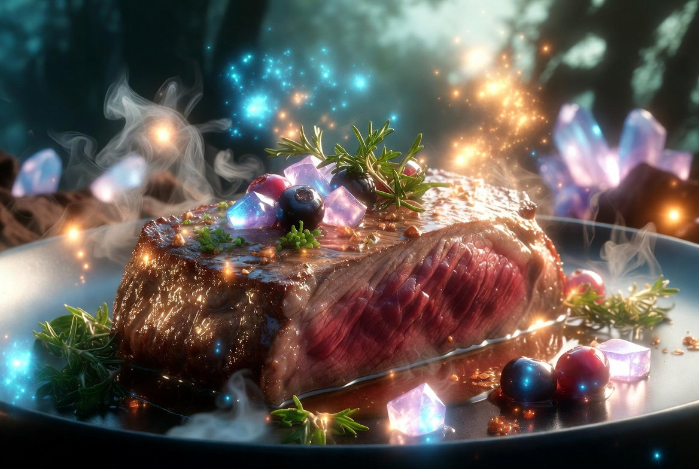

Star Crystal Forest Meat Steak

description
This is a gourmet delicacy from a fantasy world, prepared using the meat of the "Star-Crystal Deer"—a legendary beast blessed by the spirits of the ancient forest.
When roasted over magical flames, star-like crystals shimmer across the meat's surface; it is said that consuming it grants a temporary boost to one's magical energy.
With its mystical and refined flavor, it is a dish cherished by both royalty and adventurers alike.
Ingredients (2 ~ 3 servings)
-
Star-Crystal Deer shoulder meat (or lean meat from a magical beast): 400g
-
Starlight Herbs (a mix of rosemary and glowing leaves): Appropriate amount
-
Crystal salt: 2 teaspoons
-
Magic Honey (or Golden Honey): 2 tablespoons
-
Magic Honey (or Golden Honey): 2 tablespoons; Moon-Dew Wine (or red wine): 100 ml
-
Kishō Berry: 10 berries
-
Ancient Tree Olive Oil: 2 tablespoons
-
Magical salt crystals: a pinch (for finishing)
procedure
-
Rub crystal salt and starlight herbs into the meat of the Star-Crystal Deer, then let it sit for about 30 minutes to allow the magical energy to permeate (while letting it come to room temperature).
-
Sear both sides of the meat for one minute each over high heat on a magical iron plate (frying pan) heated with Ancient Tree olive oil, causing star crystals to emerge on the surface.
-
Add the moon-dew wine and magical honey, then simmer over medium heat, slowly reducing the liquid while coating the meat in the sauce (about 8–10 minutes).
-
Turn off the heat and let it rest for about 5 minutes to allow the juices to settle.
-
Once plated, sprinkle with Shining Crystal Berries and Magical Crystal Salt, garnish with Starlight Herbs, and it is ready.
Home